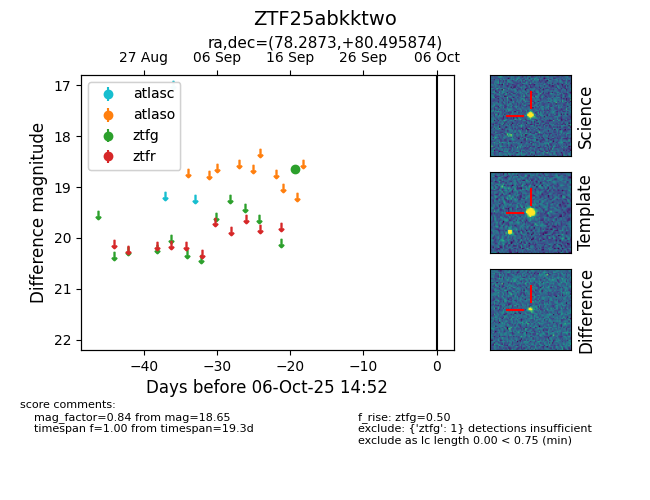

FINK: ZTF25abkktwo
Lasair: ZTF25abkktwo
ALeRCE: ZTF25abkktwo
ZTF25abkktwo (ztf,fink)
equatorial (ra, dec) = (78.2873,+80.49587)
galactic (l, b) = (132.3115,+22.86840)

last ztfg=18.65
1 ztfg detections